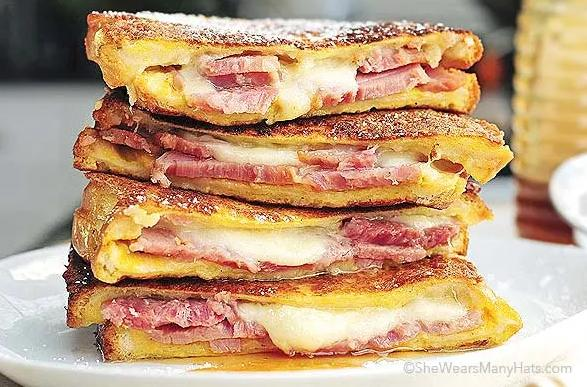

Monte Cristo Sandwich

Description
This recipe for a Monte Cristo sandwich will have you craving them morning, noon, and night. It’s an easy twist on the basic ham and cheese combination and oh so very satisfying. Plus, it’s the perfect place for leftover ham.
Ingredients
- 2 eggs
- pinches of salt and pepper
- 4 slices sturdy white bread (or white bread of preference)
- 2 tablespoons yellow mustard
- 2 tablespoons mayonnaise
- 1/2 pound thick sliced baked ham
- 1/2 ounce, weight shredded gruyere cheese
- additional salt and pepper to taste
- 2 tablespoons butter
Steps
- Beat eggs in a shallow dish (large enough to fit a sandwich) along with a few pinches of salt and pepper. Set aside.
- Assemble sandwiches, with mustard, mayonnaise, ham, cheese, salt and pepper to personal preference. Slightly compress sandwich.
- Heat skillet over medium heat. Add butter; allow to melt.
- Dip and coat each sandwich in beaten egg, and place in skillet. Cook sandwiches 2-3 minutes on each side, until browned to liking and cheese has melted.